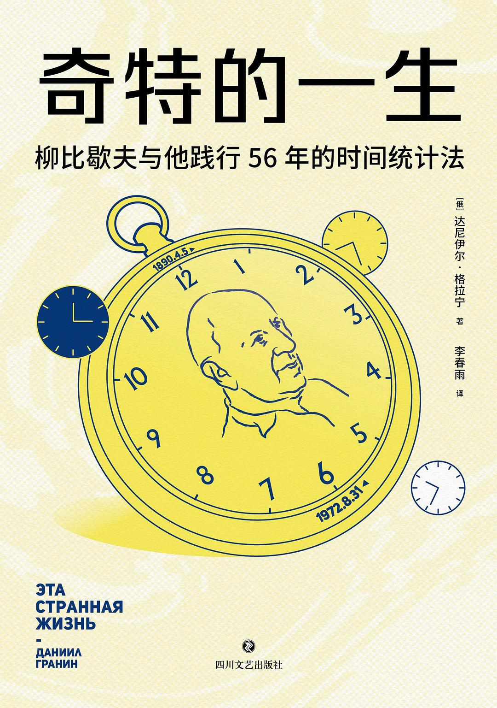

苏联/俄罗斯作家，工程师出身。代表作包括《围困》《野牛》等。格拉宁以严谨的科学精神和深厚的人文关怀著称，《奇特的一生》是他最广为人知的非虚构作品，记录了苏联科学家亚历山大·柳比歇夫传奇的一生。
格拉宁在1970年代认识了柳比歇夫——一个其貌不扬、默默无闻的昆虫学家。当柳比歇夫去世后，格拉宁整理了他的遗物，发现了一套令人震撼的时间记录系统：从1916年到1972年，连续56年，柳比歇夫精确记录了每天每件事花费的时间，从未间断。格拉宁意识到，这不是简单的日程表，而是一种全新的时间哲学——关于诚实、关于纪律、关于一个人如何用一生做好一件事。
苏联昆虫学家、生物学家、科学史学家。他在分类学领域发表了70多部学术著作，涉及分散分析、生物分类学、昆虫学等多个领域。同时他还是一个博学家——精通哲学、历史、文学，一生写了上万封信。他的秘诀不是天赋，而是一套被称为"时间统计法"的个人管理系统。
| 部分 | 核心内容 |
|---|---|
| 第一部分 | 时间统计法的发现——柳比歇夫的遗产 |
| 第二部分 | 方法论——如何记录、分析、使用时间 |
| 第三部分 | 柳比歇夫的一生——实践中的时间哲学 |
| 第四部分 | 思考——这种生活方式意味着什么 |
柳比歇夫的时间统计法与现代GTD、番茄钟截然不同。他的核心不是"规划未来"，而是"诚实记录过去"。
1964年4月7日
分类昆虫学（画2张图）——3小时15分
鉴定袋蛾——20分
附加工作（写信）——1小时20分
休息（散步、读报）——1小时45分
基本工作合计：6小时20分
关键设计：
柳比歇夫根据记录数据，给自己设定每年的"时间预算"：
这个数字不是拍脑袋定的——是从多年记录中统计出来的"真实可支配时间"。
每个月末，柳比歇夫会花几个小时做时间汇总：
这些汇总他都保留了下来，成为格拉宁写作本书的主要材料。
| 维度 | 柳比歇夫法 | GTD/番茄钟等 |
|---|---|---|
| 核心动作 | 记录（record） | 规划（plan） |
| 面对方向 | 过去 | 未来 |
| 时间单位 | 任意 | 固定（25分钟等） |
| 主要目的 | 了解自己 | 完成任务 |
| 所需坚持 | 56年如一日 | 持续遵守规则 |
| 效果周期 | 年为单位 | 天为单位 |
"人最宝贵的是生命。但仔细分析，最宝贵的是时间。因为生命是由时间构成的。"
深度解析：柳比歇夫把时间提升到了存在论的高度——不是"时间很重要"，而是"时间就是生命本身"。这解释了他为什么把记录时间看得如此严肃。
"如果你诚实地记录时间，你就会发现：你以为的'忙碌'，其实大部分时间花在了犹豫、等待和分心上。"
深度解析：这是时间统计法最残酷的地方——它会揭示你一直逃避的真相。大多数人不是"没时间"，而是把时间花在了不想承认的地方。
"效率的秘密不是做得更快，而是减少做错的事。"
深度解析：柳比歇夫从不追求"更快"，他追求的是"方向正确"。每年的时间汇总就是他检查方向的工具——如果发现某类工作花的时间在下降，他就调整。
"一个人能做成的事，往往比他以为的少。但能做成的事，也比大多数人以为的多。"
深度解析：这不是鸡汤，而是精确的统计结论。柳比歇夫用56年的数据证明：人既高估自己的短期能力，也低估自己的长期积累。
[事项名]——[时间]| 误读 | 真相 |
|---|---|
| "柳比歇夫活得很苦" | 他其实过得非常充实快乐，拒绝了无聊的事，做了大量热爱的事 |
| "这是极端自律" | 他靠的是系统而非意志力——记录本身不需要意志力 |
| "方法过时了" | 核心原理（记录→分析→调整）永不过时，工具可以用手机 |
| "只适合科学家" | 任何想用长期积累创造价值的人都适用 |
读完这本书，最大的震撼不是柳比歇夫的方法多精妙，而是他做到了56年。
方法人人都能学会，但绝大多数人坚持不了一周。柳比歇夫的秘密可能根本不在于"时间统计法"本身，而在于：他真心相信记录时间是有价值的。
这让我意识到：最好的时间管理系统，不是最聪明的那个，而是你真正愿意每天用的那个。柳比歇夫的系统之所以有效，是因为他用了一辈子。
这不是一本教你怎么排日程的书。这是一本让你思考"你打算怎么过这一生"的书。